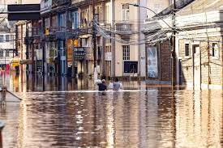
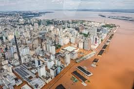
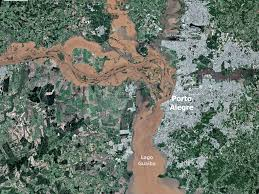
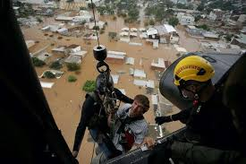
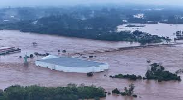

No dia 27 de abril de 2024, intensas chuvas desencadearam uma série devastadora de eventos no estado do Rio Grande do Sul, resultando em uma tragédia de proporções alarmantes. Mais de 170 vidas foram perdidas e mais de 600 mil pessoas foram deslocadas de suas residências devido aos impactos catastróficos das enchentes.
Os rios mais afetados foram o Guaíba e o Taquari, que atingiram níveis históricos sem precedentes, superando o recorde registrado em 1941 com 4,76 metros. A tempestade afetou severamente 471 municípios gaúchos, abrangendo quase 95% das 497 cidades do estado.
Este desastre não apenas causou um impacto ambiental devastador, mas também teve repercussões econômicas, ecológicas e psicológicas profundas, ecoando além das fronteiras brasileiras, sensibilizando a comunidade internacional. O país uniu esforços para socorrer as vítimas, com o povo brasileiro mobilizando recursos significativos em ajuda humanitária.
Embora o Brasil tenha sido duramente atingido, desastres semelhantes têm ocorrido globalmente, exemplificados por eventos devastadores no Quênia, Arábia Saudita e Emirados Árabes Unidos. As inundações e as ondas de calor recentes são um reflexo alarmante da crise climática que o mundo enfrenta.
Este momento crítico sublinha a urgência de ações globais coordenadas para enfrentar as mudanças climáticas e mitigar os impactos cada vez mais severos dos fenômenos naturais extremos.
Aqui estão algumas imagens que ilustram a devastação:
https://www.cnnbrasil.com.br/
https://g1.globo.com/
https://www.uol.com.br/
https://www.folha.uol.com.br/